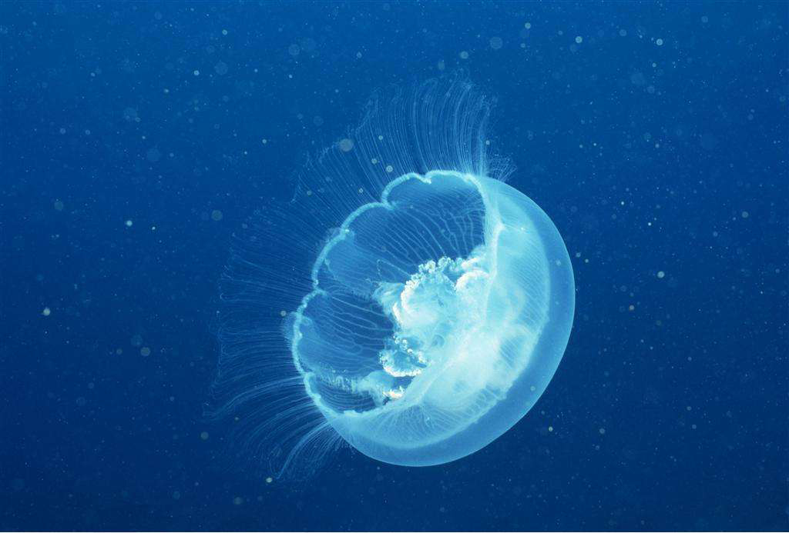

海蜇
俗称为水母的软体动物
海蜇属水母纲，是生活在海中的一种腔肠软体动物，体形程半球状，可食用，上面呈伞状，白色，借以伸缩运动，称为海蜇皮，下有八条口腕，其下有丝状物，呈灰红色，叫海蜇头。伞部隆起呈馒头状，直径达五十厘米，最大可达一米，口腕八枚，缺裂成许多瓣片。广布于中国南北各海中。尤其是浙江沿海最多。可供食用，并可入药。海蜇水母体在海洋中浮游生活，栖息于近海水域，尤其喜栖河口附近，分布区水深一般在3～20米。海蜇有毒，一旦被海蜇蜇伤，不要用淡水冲洗，因淡水可促使刺胞释放毒液，应尽快用毛巾、衣服、泥沙擦去黏附在皮肤上的触手或毒液，可用碳酸氢钠（小苏打）或明矾清洗伤处。若损伤面积大，全身反应严重者，要及时去医院治疗。